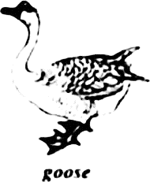

2022年北京市中考英语真题 · 单项填空 第1、2、3、4、5、6、7、8、9、10、11、12题 · 对应解析
1. My sister is only six, but ________ can already help with some housework.
A. heB. sheC. itD. they
【答案】B
【解析】
【详解】句意：我妹妹只有六岁，但她已经能帮忙做一些家务了。
考查代词辨析。he他；she她；it它；they他们。此处指“My sister”，用she，故选B。
2. We have history class ________ three o’clock every Friday afternoon.
A. atB. onC. inD. to
【答案】A
【解析】
【详解】句意：我们每周五下午三点钟上历史课。
考查介词辨析。at其后加时间点；on其后加星期或具体的时间；in其后加早中晚，月份，季节，年份等；to到。“three o’clock”是时间点，用时间介词at。故选A。
3. —_________ I take photos here?
—Sorry, you can’t. It’s not allowed in the museum.
A MustB. NeedC. CanD. Will
MustB. NeedC. CanD. Will
【答案】C
【解析】
【详解】句意：——我可以在这里拍照吗？——对不起，你不能。博物馆不允许拍照。
考查动词辨析。Must必须；Need需要；Can可以；Will将会。根据答语“Sorry, you can’t”可知，用can提问，用can/can’t回答。故选C。
4. After taking tennis classes, Tim is much ________ than last year.
A. strongB. strongerC. strongestD. the strongest
【答案】B
【解析】
【详解】句意：上了网球课之后，蒂姆比去年强壮多了。
考查形容词比较级。根据“than”可知，此处用形容词比较级，故选B。
5. —_________ will Liu Yang stay in the space station this time?
—For six months.
A. How longB. How oftenC. How muchD. How soon
【答案】A
【解析】
【详解】句意：——这次刘洋会在空间站待多久？——六个月。
考查特殊疑问句。How long多久；How often多久一次；How much多少钱；How soon多久之后。根据答语“For six months.”可知，此处对时长进行提问，故选A。
6. Mr. Smith has helped me a lot, _________ I’m thankful to him.
A. orB. butC. forD. so
【答案】D
【解析】
【详解】句意：史密斯先生帮了我很多，所以我很感谢他。
考查连词辨析。or或者；but但是；for为了；so因此。前后两句是因果关系，前因后果，用so连接，故选D。
7. The workers _________ the community center now.
A. cleanedB. were cleaningC. will cleanD. are cleaning
【答案】D
【解析】
【详解】句意：工人们现在正在打扫社区中心。
考查现在进行时。根据“now”可知句子要用现在进行时，其结构是“be（am/is/are） doing”。故选D。
8. Don’t lose heart. If you keep working hard, you _________ some day.
A. will succeedB. succeedC. succeededD. have succeeded
【答案】A
【解析】
【详解】句意：不要灰心。如果你继续努力，将来某一天你会成功的。
考查if引导的条件状语从句。if表示“如果”时遵循“主将从现”原则，即主句用一般将来时，从句用一般现在时；空格处于主句位置，故用一般将来时。故选A。
9. I ________ about my sister when my phone rang. It was her!
A. thinkB. will thinkC. was thinkingD. am thinking
【答案】C
【解析】
【详解】句意：我正在想我妹妹的时候，电话响了。正是她！
考查过去进行时。根据“I...about my sister when my phone rang.”可知，电话响的时候，正在想她，强调在过去的某个时间点正在发生的动作，用过去进行时，故选C。
10. Jim _________ a lot about Chinese culture since he began to study in our school.
A. learnsB. learnedC. will learnD. has learned
【答案】D
【解析】
【详解】句意：Jim自从开始在我们学校学习之后学到了很多关于中国文化的东西。
考查现在完成时。根据“since自从”可知主句要用现在完成时，其结构是“have/has done”，故选D。
11. On our farm, the tea leaves ________ by hand when they are ready.
A. pickB. pickedC. are pickedD. were picked
【答案】C
【解析】
【详解】句意：在我们的农场，茶叶成熟时都是手工采摘的。
考查一般现在时的被动语态。主语“the tea leaves”是动作“pick”的承受者，时态是一般现在时，所以用一般现在时的被动语态。故选C。
12. —Do you know _________ the new national park?
—Yes, I do. To protect wildlife and benefit the local people.
A. why did China set upB. why China set up
C. when did China set upD. when China set up
【答案】B
【解析】
【详解】句意：——你知道中国为什么要建立新的国家公园吗？——是的，我知道。为了保护野生动物，造福当地人民。
考查宾语从句。此处是宾语从句，需用陈述语序，排除AC；根据答语“To protect wildlife and benefit the local people.”可知，此处表示目的，故选B。
二、完形填空（每题1分，共8分）
阅读下面的短文，掌握其大意，然后从短文后各题所给的A、B、C、D四个选项中，选择最佳选项。
Our Christmas Goose

On a cold morning that December, my brother Rick and I were sent to Uncle Tommie’s on the other side of Little Mountain to get a goose for Christmas dinner. This long journey over the mountain was hard but worth it.
That morning, dark clouds were coming together overhead. I knew it was going to snow on the ____13____.
When we arrived, Uncle Tommie was already waiting for us. “Boys, I’m not ____14____ you off,” he said, “but the wind is picking up. You’d better get the goose and head for home soon.”
After a quick thank-you and goodbye I took the goose and we left. Halfway up the mountain, it began to snow heavily. I held the goose ____15____ to me.
By the time we reached the top of the mountain. it showed more heavily. And the wind seemed to blow straight through my coat. I stepped in front of Rick. “You must be cold. Open your coat!”
“Are you crazy?” Rick asked. “I’ll lose what little warmth I have!” When he saw I was ____16____, he slowly opened his coat.
I placed the warm goose inside his coat. Rick sighed happily (舒了口气). My plan was ____17____ .
On the way down, I started to shiver (发抖). Rick said. “Dave. it's your turn now.”
He passed me the goose. For a long moment, I just stood and ____18____ my freezing(冰冷的) hands on his body. We passed the goose back and forth (来回地) between us all the way. Finally, We got home.
Sitting at the table, we explained how the goose kept us from freezing. “We can’t have him for dinner! This goose helped ____19____ our lives,” I said.
Later, we named the goose Charley and he lived out his life in the yard, bossing around the chickens and another goose we bought to keep him company. A life as the most important bird was fitting for our ____20____.